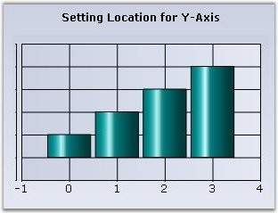
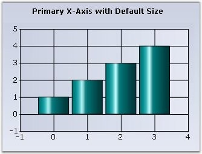
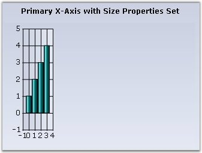

The axis' starting point, length and the whole rectangle (comprising the axis and it's labels) can be customized using the following properties.
|
ChartAxis Property |
Description |
|
Location |
Specifies the starting location of the axis. LocationType property should be equal to Set to set the Location property. |
|
LocationType |
· Set - To be able to use the above Location property. · Auto - Axis position will be automatically calculated to prevent overlap with the labels. (Default value) · AntiLabelCut - Axis thickness is calculated and the corresponding axis will be placed automatically, to prevent cutting of the labels by the sides of the control. Doing this preserves one co-ordinate of the axis location (X coordinate for horizontal axis and y coordinate for vertical axis). |
|
AutoSize |
Specifies whether length of an axis is calculated automatically or specified via the Size property. |
|
Size |
Lets you specify the length of the axis. Uses the x value for x-axis and y-value for y-axis. Increasing or decreasing the default length will cause the intervals to expand or shrink correspondingly. The AutoSize should be set to false for this property to be used. |
|
Rect |
Specifies the rectangle that includes the axis and it's labels. This provides great flexibility in letting you customize the position and size of the axes. |
Illustrating Custom Axis Location

Figure 254: Chart Axis with Location Properties Set
|
[C#]
this.chartControl1.PrimaryYAxis.LocationType = Syncfusion.Windows.Forms.Chart.ChartAxisLocationType.Set; this.chartControl1.PrimaryYAxis.Location = new PointF(15, 200); |
|
[VB]
Me.ChartControl1.PrimaryYAxis.LocationType = Syncfusion.Windows.Forms.Chart.ChartAxisLocationType.Set Me.ChartControl1.PrimaryYAxis.Location = New PointF(15, 200) |
Illustrating Custom Axis Size

Figure 255: Chart rendered in AutoSize Mode

Figure 256: Chart rendered with a custom size for the Primary X-Axis
|
[C#]
this.chartControl1.PrimaryXAxis.AutoSize = false; this.chartControl1.PrimaryXAxis.Size = new Size(50, 20); |
|
[VB]
Me.ChartControl1.PrimaryXAxis.AutoSize = False Me.ChartControl1.PrimaryXAxis.Size = New Size(50, 20) |